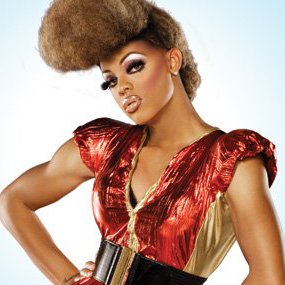

Bebe Zahara Benet is the first and original winner of RPDR, and hails from Cameroon, Africa.

Tyra Sanchez is the winner of the second season, and is known for loving Beyonce and for her forthright personality.
Raja Gemini has a background in makeup artistry, and serves fashion on the runway all day.
Sharon Needles is a spooky halloween queen, who describes herself as "smart, spooky, and stupid".
Chad Michaels is the first winner of All Stars, and is a professional Cher impersonator.
Jinkx Monsoon Seattles's "Finest MILF" and a narcoleptic.
Bianca Del Rio is an insult comic who will read everyone to filth!
Violet Chachki loves pinup glamour and has the smallest waist in RPDR history.

Alaska Thunderfuck 5000 is the second winner of All Stars, and has tons of music videos on YouTube.
Bob The Drag Queen prides herself on her activism (she even got arrested in drag!)
Sasha Velour is the one to go to if you want a lesson on queer history.
All Stars Season 3 is well on its way, and Season 10 starts later in March. Who will be next to take the crown?